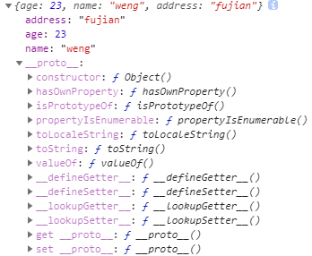
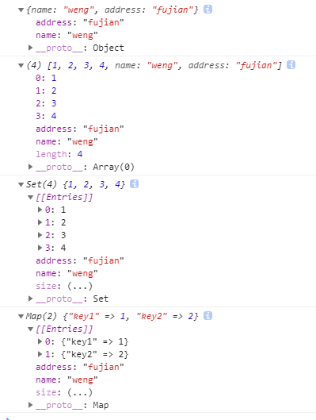
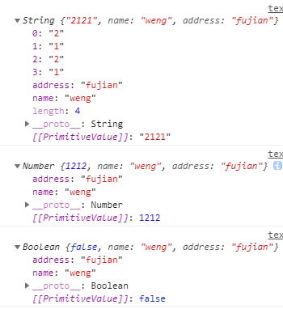
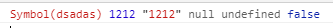
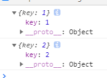

手写call，apply
这应该是面试最傻逼的题目了， 这类 native code ，用js怎么能实现的完美呢？？？
首先先理解一下call, apply具体做了些啥事情
原理
1. 调用形式
首先调用call或者apply的都是函数
function Person(address){
this.name = 'weng';
this.address = address;
}
const obj = {
age: 23,
}
Person.call(obj, 'fujian'); // 这里new
console.log(obj);

image-20210602111202474
2. 传入的参数
call和apply 的区别在于传参的写法不同： call 是一个一个参数传，而apply是以数组的形式传入
const args = [1,2,3,4];
Fn.call(obj, ...args);
Fn.apply(obj, args);实现
首先先写一个_call的方法
那这个_call要挂在哪里呢？对，就是Fn函数的原型上，那要怎么挂呢？直接原型挂
Function.prototype._call = function(target, ...args){
}target指向对象，args就是其他参数
1. 判断是否是函数(this)来调用_call
Function.prototype._call = function(target, ...args){
if(typeof this !== 'function'){
throw new Error('must be a function')
}
}2. 判断传进来的target是否为基本数据类型
如果target是基本数据类型，是无法将函数附加到target上面的，通过instanceof可以顺着原型链找到Object的构造函数的数据类型才可以被附加函数。否者就直接把这个数据返回，因为我看call就是这样做的
Function.prototype._call = function(target, ...args){
if(typeof this !== 'function'){
throw new Error('must be a function')
}
if(!target instanceof Object){
return target
}
}3. 对象是否是被冻结或者封闭的状态
这里的对象如果被冻结或者处于封闭的状态那么，后续调用函数给对象做赋值操作也会失效，所以这里还需要判断一层，具体的对象冻结和对象封闭可以看看这Object.freeze() 和 Object.seal()
Function.prototype._call = function(target, ...args){
if(typeof this !== 'function'){
throw new Error('must be a function')
}
if(!target instanceof Object){
return target
}
if(Object.isFrozen(target) || Object.isSeal(target)){
return target
}
}3. target必须是目标对象，如果不传值，默认为window
Function.prototype._call = function(target, ...args){
if(typeof this !== 'function'){
throw new Error('must be a function')
}
if(!(target instanceof Object){
return target
}
if(Object.isFrozen(target) || Object.isSeal(target)){
return target
}
target = target || window;
}4. 隐式绑定，改变构造函数的调用者间接改变 this 指向
Function.prototype._call = function(target, ...args){
if(typeof this !== 'function'){
throw new Error('must be a function')
}
if(!(target instanceof Object){
return target
}
if(Object.isFrozen(target) || Object.isSeal(target)){
return target
}
target = target || window;
target.fn = this; // 隐式绑定，改变构造函数的调用者间接改变 this 指向
let result = target.fn(...args)
return result;
}这里我看很多人用了 target.fn去将this指向这个参数，但是万一这个fn本身就在target当中声明了呢？
这里我的想法是以一个符号作为键，保存这个键名，之后调用和赋值就不怕出问题了，因为声明新得符号的引用只是暂时的，也不可能存在重复的情况，之后删除也方便
改善之后的代码为：
Function.prototype._call = function(target, ...args){
if(typeof this !== 'function'){
throw new Error('must be a function')
}
if(!(target instanceof Object){
return target
}
if(Object.isFrozen(target) || Object.isSealed(target)){
return target
}
target = target || window;
const fn = Symbol('fn');
target[fn] = this; // 隐式绑定，改变构造函数的调用者间接改变 this 指向
let result = target[fn](...args);
delete target[fn]; // 这里要把这玩意删了
return result;
}测试
正常传
function Person(address) {
this.name = "weng";
this.address = address;
}
let obj = {
name: "weng",
};
let arr = [1, 2, 3, 4];
let set = new Set([1, 2, 3, 4]);
let map = new Map([
["key1", 1],
["key2", 2],
]);
let stringObj = new String("2121");
let numberObj = new Number(1212);
let booleanObj = new Boolean(false);
Person._call(obj, "fujian");
Person._call(arr, "fujian");
Person._call(set, "fujian");
Person._call(map, "fujian");
Person._call(stringObj, "fujian");
Person._call(numberObj, "fujian");
Person._call(booleanObj, "fujian");
console.log(obj);
console.log(arr);
console.log(set);
console.log(map);
console.log(stringObj);
console.log(numberObj);
console.log(booleanObj);打印出来的是酱紫的

image-20210602160711663

image-20210602161119496
传基本数据类型数据
const symb = Symbol("dsadas");
const num = 1212;
const str = "1212";
const isNull = null;
const isUndefined = undefined;
const isBoolean = false;
Person._call(symb, "fujian");
Person._call(num, "fujian");
Person._call(str, "fujian");
Person._call(isNull, "fujian");
Person._call(isUndefined, "fujian");
Person._call(isBoolean, "fujian");
console.log(symb, num, str, isNull, isUndefined, isBoolean);最终打印出来的是酱紫的

image-20210602162033860
传一个冻结或者封闭的对象
const obj = Object.freeze({
key: 1,
});
const obj2 = Object.seal({
key: 2,
});
Person._call(obj, "fujian");
Person._call(obj2, "fujian");
console.log(obj);
console.log(obj2);打印结果是这样：

image-20210602162721877
直接调用
Person.call();那这时候作用对象在浏览器里头就是window了，构造函数里头的赋值操作可以在window对象里头体现。
最终代码
优化了一哈子
Function.prototype._call = function (target, ...args) {
if (typeof this !== "function") {
throw new Error("must be a function");
}
if (
!(target instanceof Object) ||
Object.isFrozen(target) ||
Object.isSealed(target)
) {
return target;
}
target = target || window;
const fn = Symbol("fn");
target[fn] = this; // 隐式绑定，改变构造函数的调用者间接改变 this 指向
let result = target[fn](...args);
delete target[fn];
return result;
};不晓得对不对反正自己感觉 一般